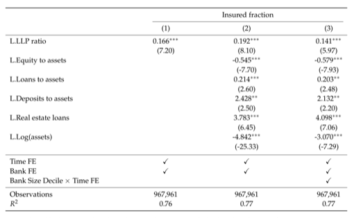
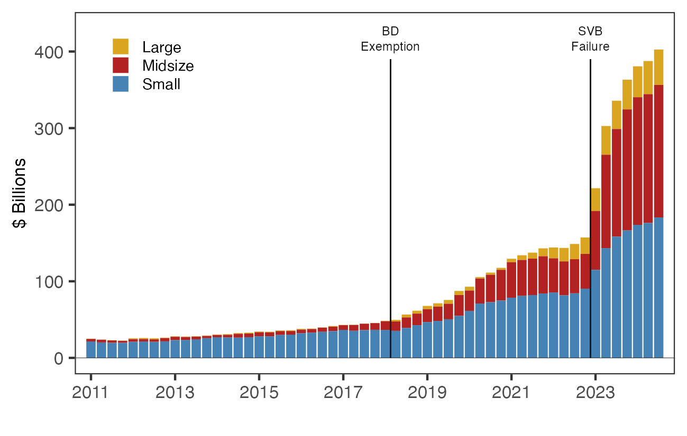

|
Amiyatosh Purnanandam I'm the Denise and Ray Nixon Endowed Chair in Finance at the McCombs School of Business at the University of Texas, Austin. My research covers a wide range of topics in banking, FinTech, mortgage, and corporate finance. My recent research work is mostly related to bank deposits, digital payments, AI financing, and measurement & detection of risk in banking. Email / CV / Research / Data & Code / Co-authors / Scholar |

|
ResearchMy research interests span several key areas in finance. In banking, I focus on bank deposits, the relationship between banking and the real economy, measurement and monitoring of risk in banks, and bank loans. I have worked on several topics in real estate and mortgages, particularly studying the subprime mortgage crisis and the RMBS market. In the FinTech space, I research digital payments and online lending platforms. In corporate finance, I study risk management, IPOs & SEOs, capital structure, and security design. I also conduct research in credit risk, analyzing default risk and security returns, as well as the modeling of credit risk. Below are some of my recent research works. Please check my Google Scholar page or my research page for more details. |
|
Financing the AI Buildout: Leverage, Opacity, and Credit Risk
Susan Cherry, Amiyatosh Purnanandam, Shikhar Singla Working paper, 2026 We measure leverage, including the effect of off-balance-sheet leases and purchase orders, in the artificial intelligence buildout using SEC filings from 63 public firms. At face value, off-balance-sheet claims account for nearly three quarters of their fixed claims. Counting these claims at present value raises leverage from 0.22 to 0.48 as of June 2026. The filings often omit payment schedules and cancellation terms, which makes off-balance-sheet leverage opaque. Firms with more off-balance-sheet claims have wider bond spreads, even within rating categories, but not lower credit ratings. These findings point to a gap between the risks priced by bond investors and those reflected in ratings, with implications for credit allocation under rating-based investment rules. |
|
|
 |
How do government guarantees affect deposit supply?
Thomas Flanagan, Edward Kim, Shohini Kundu, Amiyatosh Purnanandam Working paper, 2026 The market value of deposit insurance changes over time and across banks as the value of the underlying put option changes, but the premium banks pay for the insurance does not adjust to completely capture this variation. Consequently, their incentive to supply insured deposits changes with the subsidy they enjoy from deposit insurance. Factors that increase the subsidy, such as asset risk, move the supply curve outward. Consistent with this idea, we show that banks raise more insured deposits and pay higher insured rates as they become riskier, shifting their funding mix toward insured deposits. These findings uncover a new channel of deposit supply, with implications for the cost of resolving bank failures, the pricing of deposit insurance, and market discipline. |
|
 |
The economics of network-based deposit insurance
Edward Kim, Shohini Kundu, Amiyatosh Purnanandam R&R, Review of Financial Studies. Supported by NBER Initiative on Market Frictions and Financial Risks, 2025 We examine the financial stability implications of deposit insurance using reciprocal deposits, a financial innovation through which banks can break up large deposits and place them with others in an offsetting manner. We show that higher insurance coverage allowed banks to stem deposit outflows during the 2023 banking crisis. Network banks paid lower deposit rates, grew larger, and expanded their local deposit market share, while assuming greater exposure to interest rate risk. We discuss the trade-offs of deposit insurance and its impact on the banking sector's industrial organization. |

Miscellanea |
Recent Policy Talks & Panel Discussions |
Fed St. Louis, 2026, Community Banking Conference
Fed Dallas, 2025: Panel Discussion on Bank Funding India Policy Forum, 2025: Drivers of corporate Investment in India Guest Speaker at State Bank of India's Board of Director's Strategy Meeting, 2025 Federal Reserve Bank of Kansas City: Future of Banking Conference, 2025 Columbia University India Summit, 2025 CAFRAL, Reserve Bank of India Keynote Address on Deposit Insurance G7 Digital Payment Expert Group: Digital payments and financial inclusion. Kautilya Economic Conclave, New Delhi: Financial Sector Resiliency in India. India Policy Forum, 2024: How digital payments can help with economic development. G20 Financial Stability Reforms: Evaluation of post-GFC securitization reforms. |
|
Design and source code from Jon Barron's website |